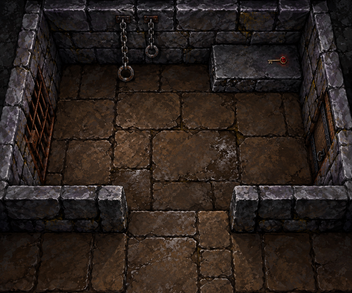
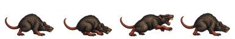
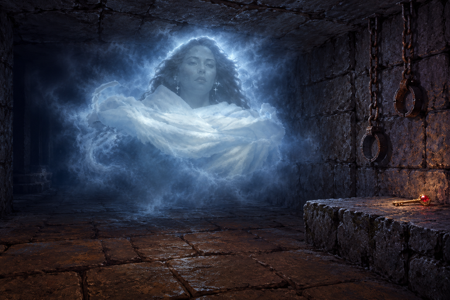

Visualização técnica isolada. Imagens em escala 1:1; ajuste o zoom do navegador para 100%. Não representa mapa jogável nem combate implementado. O laboratório e os saves não são acessados.
Aprovação de direção registrada; testes técnicos permanecem separados. No jogo, escolha “Validação visual R04” para a galeria integrada. Esta página preserva as escalas exibidas na aprovação.

Lajes marrons, alvenaria fria, grades, correntes e porta. A perspectiva ainda converge: não é um tileset ortogonal aprovado.

Alerta → preparação → bote → recuperação. Trecho de estudo; faltam transições e estados para animação completa de combate. Conferir incisivos, patas, cauda e deslocamento da cabeça.

A figura e os membros espectrais pertencem a Ria. Nenhum corpo, mão, sombra, reflexo ou equipamento do jogador.